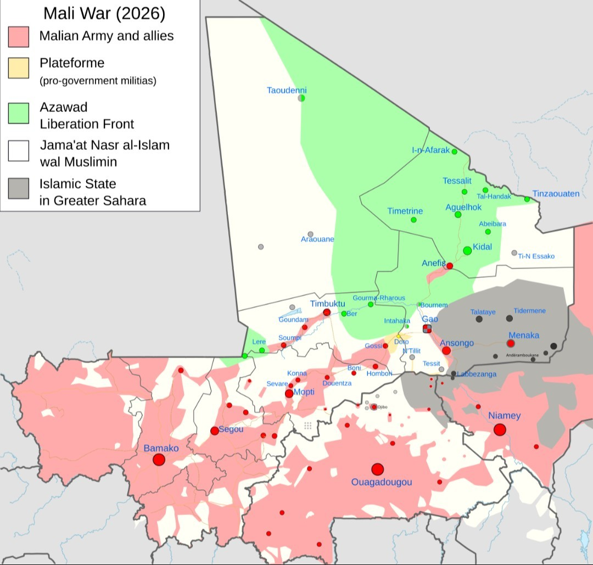
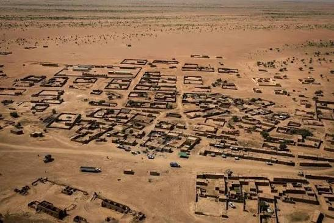
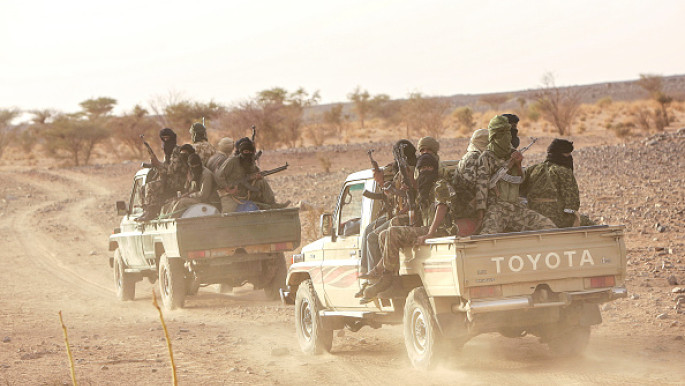

The July 4 attacks across Mali do not yet prove a single centrally commanded offensive or a confirmed territorial collapse. They do show something strategically dangerous for Bamako: armed groups can force the state to defend the north, the center and the approaches to the capital at the same time.
The map is the first clue.
On July 4, Mali's army said attacks targeted Aguelhok, Anefis and Gao in the north, Sévaré in central Mali and Kenieroba in the south. These are not interchangeable dots on a crisis map. Anefis and Aguelhok sit inside the northern war over access, presence and political control. Gao is a northern hub. Sévaré matters because of its central position near Mopti and its military relevance. Kenieroba matters for a different reason: it brings the pressure southward, toward the psychological perimeter of Bamako.

That geography is why the conventional reading — "rebels launched another coordinated offensive" — is too easy.
The better reading is more uncomfortable for Mali's junta: this looks less like a confirmed bid to seize and hold five places, and more like a pressure operation designed to stretch the state's nervous system. It forces FAMa to answer several questions at once. Can it defend northern garrisons? Can it keep Gao calm? Can it protect a central military node? Can it secure sensitive infrastructure south of the capital? Can it do all of that while still telling the public the situation is under control?
For now, the answer is not clear. And that uncertainty is the point.
What Is Established
The publishable core is solid but narrow.
Al Jazeera, reporting with AFP and Reuters, said armed men launched attacks in five locations across Mali on July 4. The Malian army named Aguelhok, Anefis, Gao, Sévaré and Kenieroba as targets. In a later statement, the army claimed 20 "terrorists" were killed in Sévaré and six in Gao, and said the situation was "totally under control." Those figures should be treated as official claims, not independently verified casualty counts.
AP separately reported that Mali's army said several towns were targeted, while the Azawad Liberation Front, or FLA, said Anefis was being targeted by separatist fighters. AP also quoted a Gao resident saying the army was conducting door-to-door searches and that attackers were believed to remain in part of the city, even as calm had returned.
The strongest territorial claim concerns Anefis, and it is also the claim that needs the most caution. An FLA-linked figure told AP that Anefis was under FLA control and that the fighting was almost over. AP explicitly said that claim could not be independently verified.
Kenieroba also requires careful language. AFP, via BSS, reported that a prison in Kenieroba was attacked, citing the army, residents and security sources. Agenzia Nova separately reported, citing penitentiary sources, that vehicles inside the prison compound were burned. That supports "reported prison attack," not a fully verified battle-damage assessment.
There is also a timing wrinkle. BSS/AFP reported that fighting started around 04:00 GMT, while Al Jazeera's AFP/Reuters compilation reported about 05:00 local time, also rendered as 05:00 GMT. That is not fatal to the story, but it is a good reminder not to overstate precision in a fast-moving case.
Why the Simple "Coordinated Offensive" Frame Is Incomplete
There may have been coordination. But coordination is not the same thing as unified command.
This matters because Mali's conflict now has overlapping wars inside it. Tuareg-led separatists have a territorial and political logic in the north. JNIM, al-Qaeda's regional affiliate, has a broader insurgent logic: expanding influence, pressuring trade routes, weakening the state and presenting itself as an alternative authority in areas where the state cannot function. Local armed actors may also exploit the same operational moment without sharing the same end state.
That makes "FLA/JNIM offensive" a tempting shorthand, especially after April. But shorthand can quietly turn pattern into proof.
In late April, FLA and JNIM carried out a much larger and more consequential wave of attacks. AP reported that the April offensive killed Mali's defense minister and led to the loss of several northern towns. Reuters later described JNIM as having demonstrated new power in April by hitting Bamako's airport, killing the defense minister and seizing northern bases in coordination with Tuareg-led separatists.
That history makes July 4 plausible as part of a wider pressure campaign. It does not automatically prove that every July 4 attack was ordered, coordinated or executed by the same command structure.
The analytical distinction is not academic. If this was a centrally commanded offensive, the next question is whether Mali faces another April-style shock. If it was parallel opportunism, the danger is different: a state so stretched that multiple armed networks can generate simultaneous crises without needing a single headquarters.
Both possibilities are bad for Bamako. They are not the same.
The Evidence Chain
The source chain points to a current, real attack wave, but not to a fully resolved battlefield picture.
The Malian army's statements are central to the public record. They establish what FAMa said: that positions were targeted, that attacks were repelled, that casualties were inflicted on attackers, and that control had been restored. But official statements prove the statement was made. They do not independently verify casualty figures, terrain control or the attackers' losses.
AP adds useful local texture: residents in Gao described army searches and lingering insecurity; FLA-linked sources made claims about Anefis; AP marked the Anefis control claim as unverified.
Al Jazeera's report is useful for the multi-site picture, but it is explicitly built with AFP and Reuters material. That means it should not be counted as a separate independent source for every underlying detail.
BSS carries AFP material on the prison attack and the broader wave. Xinhua carries the Malian army's brief statement that attempted attacks targeted military positions in the five named locations, but it adds no detail on attackers or casualties in that initial account.
Agenzia Nova adds reporting from RFI, Jeune Afrique and penitentiary sources, including claims about fighting inside Anefis, reported penetration into Gao near the airport, and damage at Kenieroba. That reporting is useful as a lead, but several details remain dependent on cited third-party or unnamed sources and should not be upgraded without further confirmation.
What the evidence supports — and what it doesn't
- A multi-site attack wave occurred on July 4
- FAMa says it repelled the attacks
- FLA involvement is specifically reported at Anefis
- The prison attack at Kenieroba is reported by credible agency-linked sources
- Not supported: confirmed rebel control of Anefis, verified FAMa casualty figures, confirmed JNIM participation across the whole wave, confirmed Russian/Africa Corps losses
Actor Interests and Constraints
For Mali's junta, the July 4 wave hits the heart of its political claim. Military rule was sold as a security reset. The pivot from Western partners to Russia was framed as a harder, more sovereign way to defeat insurgency. But the security environment has worsened, and AP notes that Mali, Niger and Burkina Faso have all turned toward Russia after coups while continuing to face record levels of militant violence.
FAMa's objective is not only to hold territory. It has to preserve the perception that the state remains operationally coherent. That is harder than issuing a statement. It requires roads, fuel, intelligence, garrison resupply, reliable local partners and the ability to move forces without creating gaps elsewhere.
For the FLA, Anefis matters because it sits in the northern contest that followed April's upheaval. If FLA fighters can make Anefis untenable for FAMa or its Russian-backed partners, they do not need to hold every other attacked site to score a strategic gain. Anefis alone can carry symbolic and operational weight.

For JNIM, if involved beyond the established record, the logic would be different but compatible in the short term. JNIM benefits when the state appears unable to secure roads, towns and military sites. Reuters reported in June that JNIM-linked militants have strengthened their authority in areas where their control is established, mixing coercion with attempts at local governance and service provision.
That is the darker strategic layer. JNIM does not always need spectacular conquest. Sometimes it needs the state to look absent, exhausted or negotiable.
The Military Reality: Raiding Is Easier Than Holding
The July 4 attacks should not be dismissed as mere propaganda. Simultaneous pressure across five locations imposes real costs. It forces movement, searches, alerts, convoy decisions, local suspicion and public messaging. It may reveal weak points. It may draw FAMa into reactive deployments.
But the opposite mistake would be to treat every attack as territorial collapse.
Raiding and holding are different military problems. A raid can be planned around speed, surprise and political effect. Holding a place requires supply, local acceptance or coercive control, command discipline, survivability against air or ground response, and the ability to resist counterattack. In northern Mali, those problems are magnified by distance, terrain, thin infrastructure and the fragmentation of armed actors.
This is why Anefis is the key indicator. If fighting there remains brief or unresolved, July 4 is best understood as disruption. If independent evidence shows FAMa or Africa Corps withdrawing, losing fixed positions or failing to re-enter the town, the assessment changes.
Gao and Sévaré matter differently. They are not just symbolic names. They are nodes in the state's military and logistical architecture. A security crisis around Gao affects the north's political and military balance. Sévaré's central position near Mopti makes it relevant to any state effort to connect, reinforce or stabilize the center. Kenieroba extends the signal southward: even away from the northern front, sensitive infrastructure can be hit.
This is how pressure campaigns work. They do not always aim to win every fight. They aim to make the state defend too many things at once.

Competing Explanations
The first explanation is the strongest: a multi-node disruption campaign designed to overstretch FAMa after the April shock. The geography supports it. The north, center and south were all touched in the same operational window. The attacks also align with a broader pattern in which armed groups pressure not only military positions but also movement, confidence and state functionality.
The weakness is that simultaneity does not prove unified command. It may show coordination, but it could also show parallel exploitation of a vulnerable moment.
The second explanation is narrower: an FLA-centered push around Anefis, with separate or loosely connected attacks elsewhere. This fits the evidence that FLA attribution is clearest for Anefis. It also avoids importing April's FLA-JNIM pattern into July without fresh proof.
The weakness is that the distribution of attacks looks broader than a purely local northern operation. If future evidence confirms common planning, this explanation becomes too narrow.
The third explanation is that the wave was dramatic but contained: a propaganda-amplified disruption, not a meaningful operational shift. FAMa says the situation is under control. AP's reporting keeps the strongest Anefis claim unverified. No independent, durable territorial loss has yet been established.
The weakness is that even contained attacks can have strategic value. A state does not need to lose a city to lose confidence, tempo and freedom of movement.
The fourth explanation is the dangerous one: July 4 may be the opening phase of renewed pressure on remaining northern state positions. If Anefis becomes untenable and Aguelhok or Gao comes under sustained pressure, the story shifts from disruption to northern rollback.
That is not established. But it is the scenario to watch.
Best Current Assessment
GeoInsider assesses that the July 4 attacks are best read as a pressure operation against state cohesion, not yet as proof of a single centrally commanded campaign or confirmed territorial collapse.
The main strategic effect is not territorial control. It is capacity doubt.
Can Bamako defend the north while securing the center? Can it protect prison infrastructure and roads while reassuring the capital? Can it absorb April's shock without leaving exploitable seams? Can Russia-backed security support do more than defend selected hard points?
The July 4 wave pushes all of those questions into public view.
That is why the attacks matter even if FAMa's claim of restored control proves broadly accurate. A government can repel attacks and still look overstretched. It can keep formal control and still lose the initiative. It can win the immediate firefight while adversaries shape the tempo of the war.
Regional and Strategic Implications
In the next 24 to 72 hours, the key risk is reactive state violence. FAMa will have strong incentives to demonstrate control through patrols, searches, arrests and possible air or ground sweeps. In places where attackers are believed to remain embedded, civilians face heightened danger from both armed groups and state retaliation.
Over the next one to four weeks, the question is whether July 4 becomes a one-day shock or the start of a sustained rhythm. If there are no follow-on attacks and no verified territorial changes, the wave still reinforces the pattern of armed groups imposing multi-axis security costs. If Anefis or Aguelhok deteriorates, the center of gravity moves back to the north.
The longer-term implication is state exhaustion. Mali's junta does not have to collapse for its strategy to fail. It can fail more gradually: roads become less reliable, fuel becomes more vulnerable, garrisons become more isolated, local elites hedge, civilians flee, and the state becomes more present in statements than in daily security.
That is the war beneath the headline. Not simply who controls a town today, but who can sustain movement, authority and confidence tomorrow.
What to Watch Next
The first indicator is Anefis. Look for geolocated imagery, reliable local reporting, FAMa footage from identifiable positions, or FLA imagery from inside government facilities. Without that, "Anefis fell" remains an interested claim.
The second is FAMa and Africa Corps movement. Reinforcement, withdrawal, bypassing routes or silence from usually active channels would all matter.
The third is JNIM messaging. A formal JNIM claim naming several July 4 locations would change the attribution picture. So would evidence of a joint FLA-JNIM media line.
The fourth is Kenieroba. Confirmed prisoner escapes, facility damage, recaptures or casualty figures would determine whether the prison attack was mainly symbolic, operationally meaningful or overstated.
The fifth is road and fuel disruption. If attacks on convoys and fuel routes intensify alongside urban or garrison raids, the July 4 wave should be read inside a broader campaign to exhaust Bamako's logistics.
What Would Change My Mind
I would upgrade this toward a confirmed coordinated offensive if a credible JNIM or joint FLA-JNIM claim names multiple July 4 locations, if geolocated evidence shows synchronized attacks on identifiable FAMa positions, or if independent local sources confirm sustained fighting beyond the first day.
I would downgrade it toward a contained disruption if FAMa produces credible, location-specific evidence of restored control, if independent reporting finds no durable damage or territorial change, and if there are no meaningful follow-on attacks in the next 72 hours.
I would treat it as a major strategic setback for Bamako if Anefis is independently confirmed lost, if Aguelhok becomes untenable, or if pressure on Gao and road corridors increases in parallel.
Confidence and Source Note
Confidence is moderate overall.
There is high confidence that a multi-site attack wave was reported on July 4 and that FAMa publicly claimed control and casualty figures. There is moderate confidence that the wave was designed to stretch FAMa and exploit the post-April security environment. There is low confidence on confirmed territorial control, precise casualty figures, full JNIM attribution and Russian/Africa Corps losses.
This assessment relies on AP, Al Jazeera with AFP/Reuters, AFP material carried by BSS, Xinhua's account of the Malian army statement, Agenzia Nova's aggregation of regional reporting, and Reuters background reporting on JNIM's evolving control in Mali. Several reports remain downstream from official or agency source chains, so repetition should not be treated as independent corroboration.